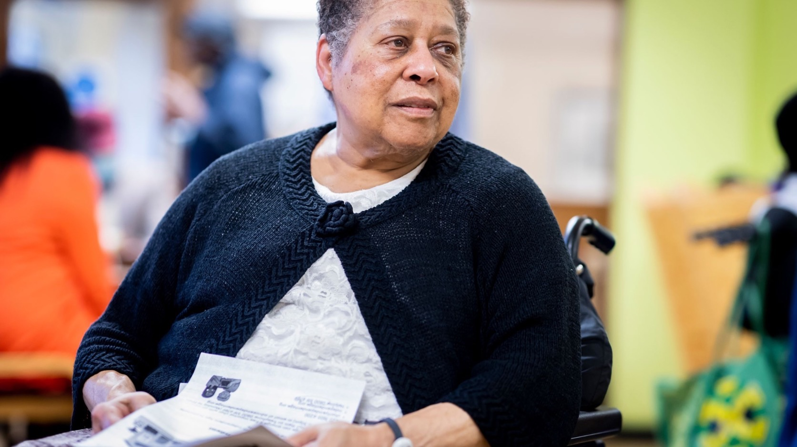

SAGI Current Hero Rotation
These are all 30 local hero images currently wired into the homepage rotation, shown in the same order as the rotation array in the code.
30 images

These are all 30 local hero images currently wired into the homepage rotation, shown in the same order as the rotation array in the code.
